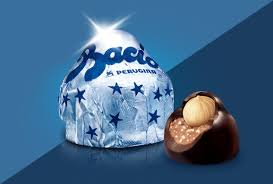
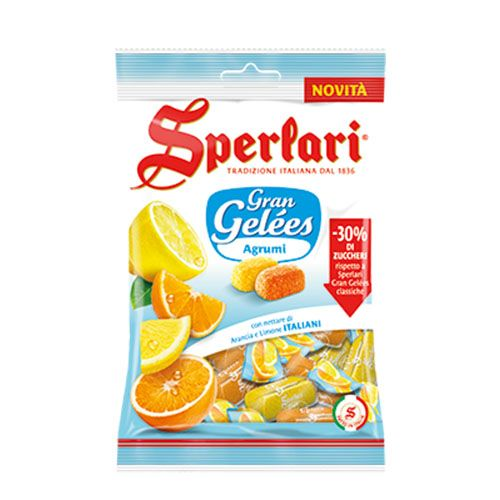
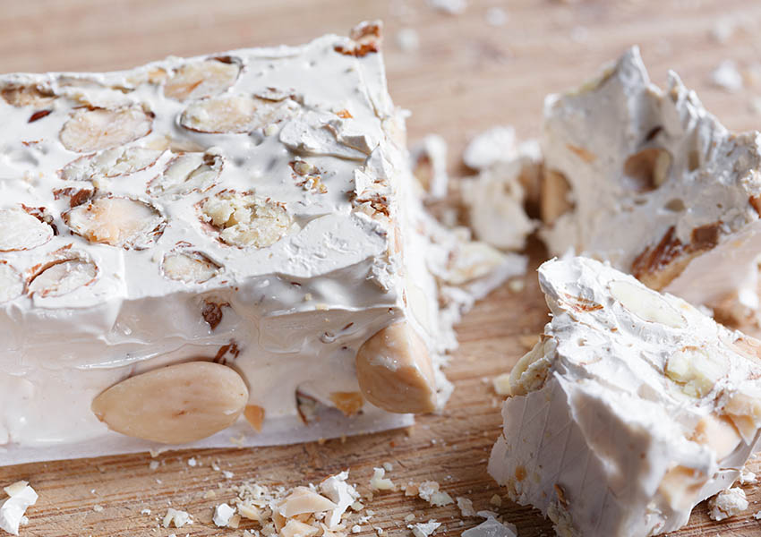

Baci
Baci are Italian chocolates. They are extremely popular in Italy, literally translated as a Kiss, baci have soft chocolate on the outside and a hazelnut in the middle. Each chocolate is individually wrapped in a glossy blue wrapper.
Sperlari
Created 1837, Sperlari are hard traditionally Italian sweets. They come in various flavours but the most common are the citrus fruits such as lemon and orange.
Nougat
Nougat candy is another traditional Italian dish. This can be made at home or brought in a local store. You can customise your nougat to your liking, with nuts, fruit or chocolate. Mostly made of honey and eggs, this is a very light and chewy candy.